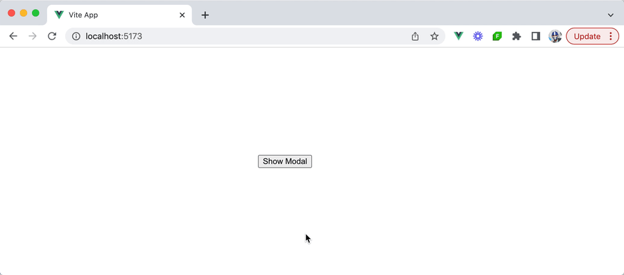
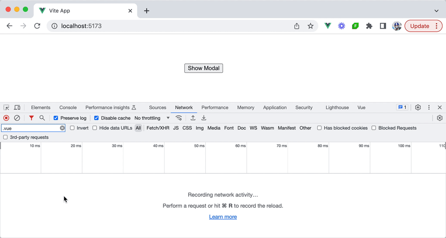
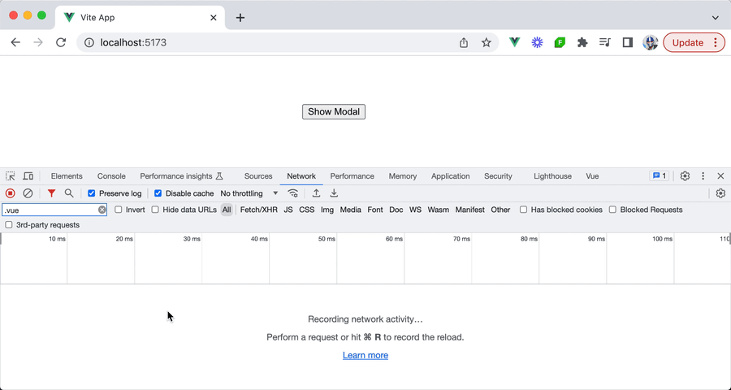
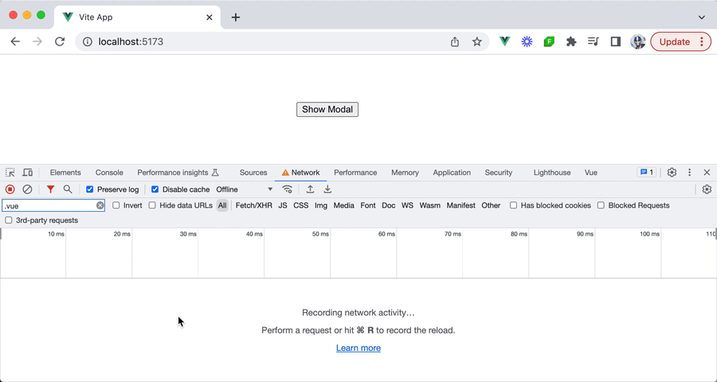

أنماط Vue
المكوّنات غير المتزامنة
عند تطوير تطبيقات ويب كبيرة، يكون الأداء في الصدارة. فسرعة تحميل الصفحة وسرعة استجابة عناصرها التفاعلية يمكن أن يؤثّرا كثيرًا في تجربة المستخدم. ومع نمو تطبيقات الويب في الحجم والتعقيد، يصبح من المهمّ ضمان تحميل حزم الشيفرة الكبيرة فقط عند الحاجة إليها. وهنا تدخل المكوّنات غير المتزامنة في Vue.
من مقالنا السابق، توصّلنا إلى فهم أنّ المكوّنات هي لبنات البناء الأساسية لبناء واجهة المستخدم. وعادةً، حين نستخدم المكوّنات، يتم تحميلها وتحليلها تلقائيًا، حتى لو لم تكن مطلوبة فورًا.
أما المكوّنات غير المتزامنة، منجهة أخرى، فتتيح لنا تعريف المكوّنات بطريقة لا يتم تحميلها وتحليلها إلا عندما تكون مطلوبة أو عندما تتحقّق شروط معيّنة. ولنمرّ على تمرين لفهم هذا فهمًا أفضل.
لنفترض لدينا مكوّن نافذة منبثقة (modal) بسيط يُعرض عند النقر على زرّ من المكوّن الأصل. وسيحتوي ملف المكوّن Modal.vue على القالب والأنماط فقط التي تحدّد كيف تظهر النافذة المنبثقة.
<template>
<div class="modal-mask">
<div class="modal-container">
<div class="modal-body">
<h3>This is the modal!</h3>
</div>
<div class="modal-footer">
<button class="modal-default-button" @click="$emit('close')">OK</button>
</div>
</div>
</div>
</template>
<style>
.modal-mask {
position: fixed;
z-index: 9998;
top: 0;
left: 0;
width: 100%;
height: 100%;
background-color: rgba(0, 0, 0, 0.5);
display: flex;
transition: opacity 0.3s ease;
}
.modal-container {
width: 300px;
margin: auto;
padding: 20px 30px;
background-color: #fff;
border-radius: 2px;
box-shadow: 0 2px 8px rgba(0, 0, 0, 0.33);
transition: all 0.3s ease;
}
.modal-body h3 {
margin-top: 0;
color: #42b983;
}
.modal-default-button {
float: right;
}
</style>
في المكوّن الأصل App، يمكننا عرض مكوّن النافذة المنبثقة مع زرّ يبدّل مرئية مكوّن النافذة المنبثقة عند النقر عليه، بمساعدة قيمة منطقية تفاعلية (showModal). يتم إظهار النافذة المنبثقة أو إخفاؤها بشكل مشروط بناءً على قيمة الخاصية التفاعلية showModal.
<template>
<button id="show-modal" @click="showModal = true">Show Modal</button>
<Modal v-if="showModal" :show="showModal" @close="showModal = false" />
</template>
<script setup>
import { ref } from "vue";
import Modal from "./components/Modal.vue";
const showModal = ref(false);
</script>
عند النقر على الزر Show Modal، تظهر النافذة المنبثقة على الصفحة.

ومن هذا المثال يمكننا أن نرى أن مكوّن النافذة المنبثقة لا يظهر إلّا في ظرف معيّن — عندما ينقر المستخدم على الزر Show Modal. ومع ذلك، فإن حزمة JavaScript المرتبطة بالمكوّن تُحمَّل تلقائيًا عند تحميل صفحة الويب بالكامل حتى قبل جعل النافذة المنبثقة مرئية. ويمكن رؤية ذلك من سجلّات الشبكة في المتصفّح.

هذا مقبول في أغلب الحالات. لكن في الظروف التي يكون فيها حجم حزمة النافذة المنبثقة كبيرًا حقًا و/أو يحتوي التطبيق على هذا النوع من المكوّنات بكثرة، فإن ذلك قد يؤدّي إلى تأخّر في زمن التحميل الأوّلي. ومع كل حزمة مضافة، حتى لو كانت berkaitan بمكوّنات نادرًا ما تُستخدم، يزداد الوقت الذي يستغرقه تحميل الصفحة الأوّلي.
defineAsyncComponent
هنا يتيح لنا Vue تقسيم التطبيق إلى أجزاء أصغر عبر تحميل المكوّنات بشكل غير متزامن، بمساعدة الدالة defineAsyncComponent().
import { defineAsyncComponent } from "vue";
const AsyncComp = defineAsyncComponent(() => {
return new Promise((resolve, reject) => {
// ...load component from the server
resolve(/* loaded component */);
});
});
تقبل الدالة defineAsyncComponent() دالة تحميل (loader function) تُعيد Promise يُحلّ إلى المكوّن المستورد. أمّا دالة resolve الخاصة بالـ Promise فيُفترض استدعاؤها عندما يكون المكوّن قد حُمِّل بنجاح، بينما تُستدعى دالة reject في حال وجود أي أخطاء أثناء عملية التحميل.
لكن بدلًا من تعريف دالة المكوّن غير المتزامن كما في الأعلى، يمكننا الاستفادة من الاستيراد الديناميكي لتحميل وحدة ECMAScript (أي مكوّن في حالتنا) بشكل غير متزامن. ويتم ذلك باستخدام صيغة import().
import { defineAsyncComponent } from "vue";
export const AsyncComp = defineAsyncComponent(() =>
import("./components/MyComponent.vue")
);
لنرَ ذلك عمليًا في مثال النافذة المنبثقة لدينا. سننشئ ملفًا جديدًا بعنوان AsyncModal.js، وفي هذا الملف سنستورد الدالة defineAsyncComponent() من مكتبة vue ونُسند ثابتًا اسمه AsyncModal إلى استدعاء الدالة defineAsyncComponent().
import { defineAsyncComponent } from "vue";
export const AsyncModal = defineAsyncComponent();
في استدعاء الدالة defineAsyncComponent() لدينا، سنستخدم صيغة import() لاستيراد مكوّن Modal الذي أنشأناه في وقت سابق بشكل غير متزامن.
import { defineAsyncComponent } from "vue";
export const AsyncModal = defineAsyncComponent(() => import("./Modal.vue"));
وفي المكوّن الأصل App لدينا، سنستورد الآن مكوّن AsyncModal غير المتزامن ونستخدمه بدلًا من المكوّن Modal.
<template>
<button id="show-modal" @click="showModal = true">Show Modal</button>
<AsyncModal v-if="showModal" :show="showModal" @close="showModal = false" />
</template>
<script setup>
import { ref } from "vue";
import { AsyncModal } from "./components/AsyncModal";
const showModal = ref(false);
</script>
مع هذا التغيير البسيط، سيصبح مكوّن النافذة المنبثقة لدينا محمَّلًا بشكل غير متزامن! فعند تحميل صفحة التطبيق الأوّلي، سنلاحظ أن حزمة المكوّن Modal لم تعد تُحمَّل تلقائيًا عند تحميل الصفحة.
وعند نقرنا على الزرّ الذي يشغّل إظهار النافذة المنبثقة، سنلاحظ أن الحزمة تُحمَّل عندئذٍ بشكل غير متزامن أثناء تصيير مكوّن النافذة المنبثقة.

واجهة التحميل وواجهة الخطأ
مع defineAsyncComponent()، لا يقدّم Vue للمطوّرين وسيلة لتحميل المكوّنات بشكل غير متزامن فحسب، بل يوفّر أيضًا إمكانات لعرض تغذية راجعة للمستخدم أثناء عملية التحميل وللتعامل مع أي أخطاء محتملة. ويضمن ذلك تجربة مستخدم سلسة حتى في ظروف الشبكة غير المثالية و/أو في حال وقوع أي أخطاء أثناء عملية التحميل غير المتزامن.
loadingComponent
قد تكون هناك أوقات نرغب فيها بتقديم تغذية راجعة مرئية للمستخدم أثناء جلب المكوّن، ولا سيما إذا كان زمن التحميل طويلًا. ولتحقيق ذلك، تمتلك defineAsyncComponent() خيارًا اسمه loadingComponent يتيح لنا تحديد مكوّن نعرضه أثناء مرحلة التحميل.
ولأننا سنصرّح بخيارات إضافية في دالتنا defineAsyncComponent()، سنستخدم خيار الدالة loader() لاستيراد مكوّن النافذة المنبثقة بشكل غير متزامن.
import { defineAsyncComponent } from "vue";
export const AsyncModal = defineAsyncComponent({
loader: () => import("./Modal.vue"),
});
لنفترض لدينا قالب مكوّن تحميل بسيط معرّف في ملف مكوّن اسمه Loading.vue على النحو التالي:
<template>
<p>Loading...</p>
</template>
ويمكننا بعد ذلك تحديد مكوّن التحميل هذا كقيمة لخيار loadingComponent في دالتنا defineAsyncComponent().
import { defineAsyncComponent } from "vue";
import Loading from "./Loading.vue";
export const AsyncModal = defineAsyncComponent({
loader: () => import("./Modal.vue"),
loadingComponent: Loading,
});
ومع أن يبدأ تحميل مكوّن النافذة المنبثقة بشكل غير متزامن، سيُعرض للمستخدم الآن رسالة Loading.... وقد يكون من الصعب رؤيتها على اتصالات الإنترنت السريعة، لذا سنحاكي شبكة Slow 3G في سجلّات الشبكة داخل المتصفّح حتى نلاحظ سلوك ظهور رسالة Loading... أثناء ما زالت حزمة مكوّن النافذة المنبثقة قيد التحميل.
errorComponent
في ظروف معيّنة (مثل اتصالات الإنترنت الضعيفة الإنترنت)، قد توجد احتمالات يفشل فيها تحميل المكوّن غير المتزامن. وفي هذه السيناريوهات، فإن تقديم تغذية راجعة عن الخطأ مهمّ للحصول على تجربة مستخدم جيّدة. وتوفّر الدالة defineAsyncComponent() خيارًا اسمه errorComponent للتعامل مع هذه المواقف، ويتيح لنا تحديد مكوّن يُعرض عند حدوث خطأ في التحميل.
لنفترض لدينا قالب مكوّن خطأ معرّف في ملف مكوّن اسمه Error.vue على النحو التالي:
<template>
<p>Error!</p>
</template>
ولدمج هذا المكوّن في إعداد النافذة المنبثقة غير المتزامنة لدينا، يمكننا تحديده كقيمة لخيار errorComponent.
import { defineAsyncComponent } from "vue";
import Loading from "./Loading.vue";
import Error from "./Error.vue";
export const AsyncModal = defineAsyncComponent({
loader: () => import("./Modal.vue"),
loadingComponent: Loading,
errorComponent: Error,
});
ولتصوير هذا عمليًا، يمكننا محاكاة وضع الشبكة Offline في أدوات مطوّر المتصفّح ومحاولة تشغيل النافذة المنبثقة. وسنلاحظ أنه عندما يفشل تحميل مكوّن النافذة المنبثقة، سيُعرض قالب المكوّن Error.

ومع كل التغييرات التي أجريناها، يمكن رؤية تطبيقنا على النحو التالي.
JavaScript iconAsyncModal.js
import { defineAsyncComponent } from "vue";
import Loading from "./Loading.vue";
import Error from "./Error.vue";
export const AsyncModal = defineAsyncComponent({
loader: () => import("./Modal.vue"),
loadingComponent: Loading,
errorComponent: Error
});
تقبل الدالة defineAsyncComponent() خيارات إضافيّة مثل delay وtimeout وsuspensible وonError() التي تمنح المطوّرين تحكّمًا أدقّ في سلوك التحميل غير المتزامن وفي تجربة المستخدم. وبالتأكّد من الاطّلاع على توثيق الواجهة البرمجية للحصول على مزيد من التفاصيل حول هذه الخصائص.
ويمكن للدالة defineAsyncComponent() أن تساعد في تقسيم التحميل الأوّلي لتطبيق Vue إلى أجزاء قابلة للإدارة عبر تأجيل تحميل مكوّنات معيّنة حتى الحاجة إليها. ويمكن أن يساعد هذا في تحسين زمن تحميل الصفحة وفي الأداء العام للتطبيق، ولا سيما عندما يحتوي التطبيق على مكوّنات عديدة ذات أحجام حزم كبيرة.